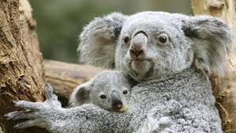

Коала – небольшое, симпатичное, кроткое животное, обитающее только на одном континенте – Австралия. На языке аборигенов слово «коала» означает «не пьет». Зверек и правда практически не пьет воду, довольствуясь влагой, содержащейся в эвкалиптовых листьях.
Коалы населяют эвкалиптовые леса, почти всю жизнь проводят в кронах этих деревьев. Она приспособилась питаться почти исключительно побегами и листьями эвкалипта, которые волокнисты и содержат мало белка, зато содержат много фенольных и терпеновых соединений, ядовитых для большинства животных.
